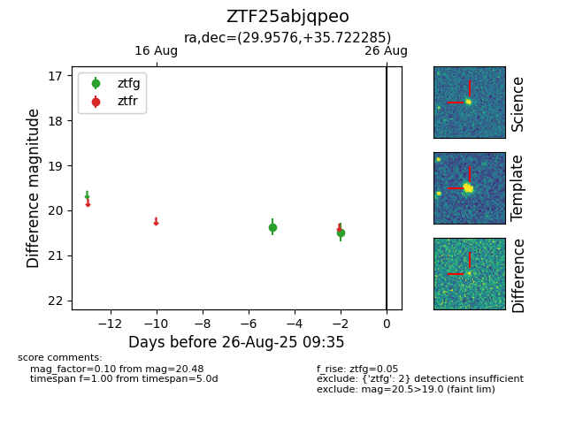

Target ZTF25abjqpeo at 2025-08-26 09:35, see:
FINK: fink-portal.org/ZTF25abjqpeo
Lasair: lasair-ztf.lsst.ac.uk/objects/ZTF25abjqpeo
ALeRCE: alerce.online/object/ZTF25abjqpeo
alt names
ZTF25abjqpeo (ztf,fink)
coordinates:
equatorial (ra, dec) = (29.9576,+35.72229)
galactic (l, b) = (138.2162,-25.11136)
photometry
last ztfg=20.48
2 ztfg detections
